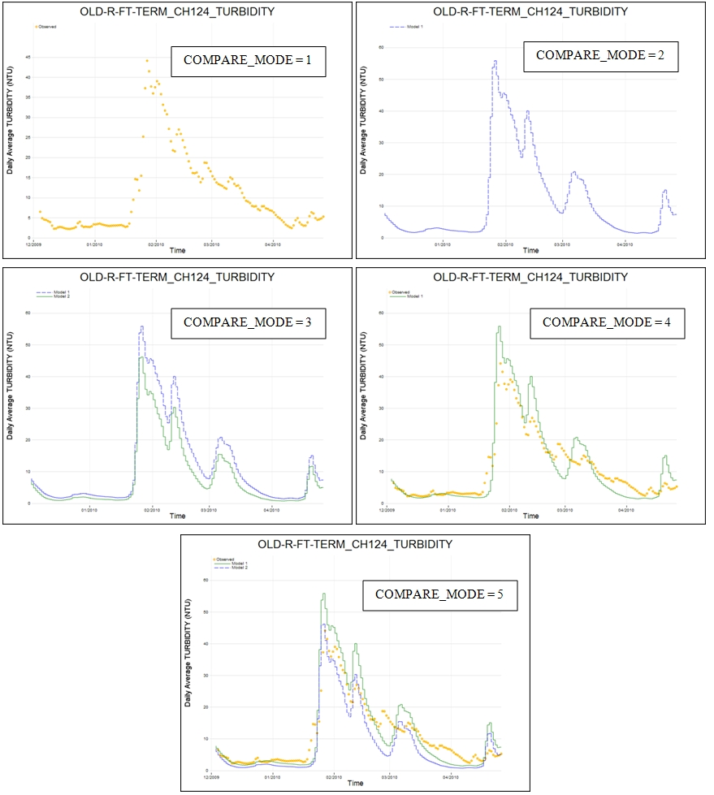
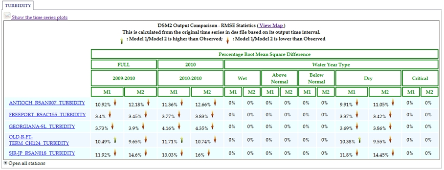
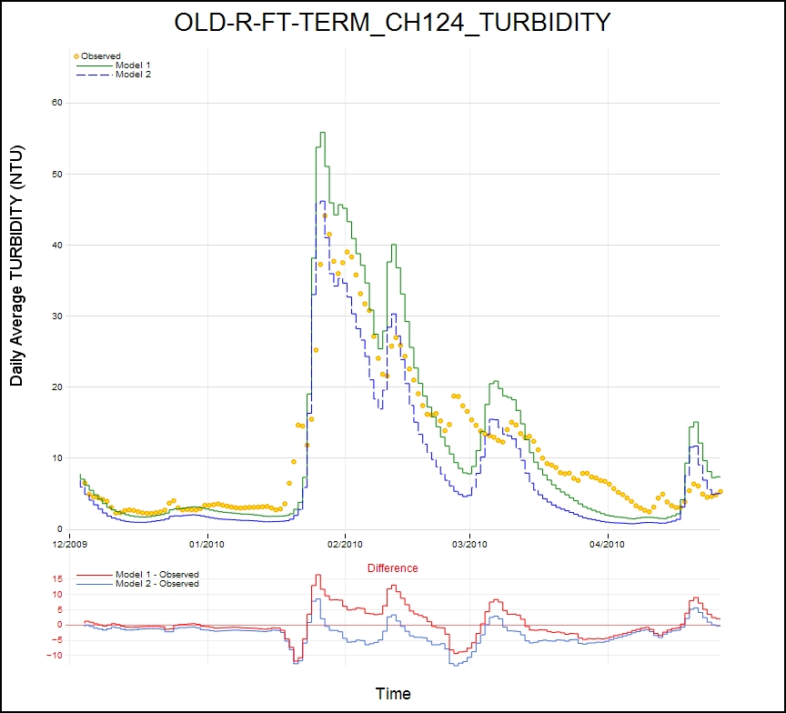

DSM2 output results are stored in HEC-DSS file format. The most common practice for output comparison is opening DSS files by VISTA, HEC-DSSVue or VTOOL and then manually going through each time series. The effort to select corresponding time series, select time window and calculate difference can get very tedious when there are more scenarios and output locations involved. After all, the manual process cannot be saved and the same type of effort needs to be repeated, not to mention human operation errors and eyeballing accuracy. It is definitely a great need to have a tool to automate the comparison process and that is the reason to develop this output comparison report tool. This tool reads DSM2 DSS output files and generates a HTML report based on instructions in a configuration file. It is designed to cover about 80% things people usually are looking at. The report is useful in viewing observed and modeled time series, model output comparison and calibration plots. The interactive time series plot gives users options to adjust time windows, overlay water year type and view the differences. The report can be viewed anytime once it is produced. HTML format enhances the capability to post the study online and allow users to interact with the interface.
Output comparison tool takes up to three DSS files, usually observed data goes to FILE0 since it will be presented as dots while FILE1 and FILE2 are solid lines.
Configuration file contains all specifications for global output setups, file locations, scenario names, output locations and time windows of interest.

The output tool is launched through command prompt by typing in �compare_dss your_configuration_file.inp� to run the program.
In order to run output comparison tool, a configuration file needs to be prepared ahead of time and place it inside an empty folder. Because output tool requires storing the calculated statistics and parsed information in JavaScript files, it is of best practice to create a new folder for each comparison configuration and then open command prompt window and make this folder as working directory.

The sample configuration file is shown as below. There are several blocks need to be completed.
|
# A template file to compare two DSM2 outputs GLOBAL_CONTROL CONTROLLER MODE PLOT_ORIGINAL_TIME_INTERVAL OFF CALCULATE_SPECIFIED_RMSE_ONLY OFF DONOT_SORT_STATION_NAME ON DEFAULT_TIME_INTERVAL 15MIN COMPARE_MODE 5 END SCALAR NAME VALUE FILE0 D:/delta/dsm2_v8/report/dssfiles/Model_2.dss # input file 0 NAME0 "Observation" FILE1 D:/delta/dsm2_v8/report/dssfiles/Model_1.dss # input file 1 NAME1 "Model 1" FILE2 D:/delta/dsm2_v8/report/dssfiles/Model_2.dss # input file 2 NAME2 "Model 2" OUTDIR D:/delta/dsm2_v8/report/case5 OUTFILE DSM2_compare.html NOTE "A long funny note" ASSUMPTIONS "I am assuming this is defined" MODELER BDO END VARIABLE NAME REF0 REF1 REF2 TEST1 FILE2:://ROLD024/FLOW//15MIN// FILE1:://ROLD024/FLOW//15MIN// FILE2:://ROLD024/FLOW//15MIN// TEST2 FILE1:://ROLD024/FLOW//15MIN// FILE1:://ROLD034/FLOW//15MIN// FILE2:://ROLD059/FLOW//15MIN// TEST3 FILE1:://ROLD024/FLOW//15MIN// FILE2:://ROLD034/FLOW//15MIN// FILE2:://ROLD024/EC//15MIN// END OUTPUT NAME TEST1 TEST2 TEST3 ROLD024_FLOW ROLD034_FLOW ROLD059_FLOW RSAC054_STAGE RSAC075_STAGE ROLD024_EC ROLD034_EC RSAC054_EC END TIME_PERIODS NAME TIMEWINDOW "Long Term" "01OCT1974 0100 - 30SEP1985 2400" "Period 1" "01OCT1974 0100 - 30SEP1980 2400" "Period 2" "01OCT1980 0100 - 30SEP1985 2400" END |
GLOBAL_CONTROL
�GLOBAL_CONTROL� block is used to control global output by giving MODE for each CONTROLLER. The default value for the ON/OFF switch is OFF.
· PLOT_ORIGINAL_TIME_INTERVAL: For web browser, there is limit for loading certain megabytes of data in a single page. Therefore, this tool converts each time series into daily average, daily maximum, daily minimum and monthly average for plotting so that it does not take too much storage and loading memory. This mode is used when we want to see the plot for the original time interval whose time interval is less than one day, e.g. 15 minutes data. However, it is not recommended to turn this on when the length of data is more than one year.
· CALCULATE_SPECIFIED_RMSE_ONLY: Most of the computation time goes to root mean square difference calculation. Therefore, if there is no interest to investigate RMS diff other than the specified output locations, turn this mode on will save time.
· DONT_SORT_STATION_NAME: The output time series plots are presented based on OUTPUT/NAME alphabetically by default. There are cases that users want to view their time series plots based on the order that is given. For example, they may be the order from upstream to downstream or from inland toward ocean. In those cases, turn this mode on.
· DEFAULT_TIME_INTERVAL: This is used as a filter for E part in DSS file. This is to avoid non-unique matches for outputs with identical B part and C part but different E part.
· COMPARE_MODE: This is used to specify report type and it is assigned by mode numbers. There are five options available: plotting observed data only (MODE=1), plotting modeled data only (MODE=2), comparing two modeled outputs (MODE=3), comparing a model output with observed data (MODE=4), and comparing two model outputs with observed data (MODE=5).

SCALAR
�SCALAR� is utilized to control the setups for input DSS files and output HTML file. The details for each item are listed as below. A summary table shows files required for each comparison mode.

FILE0: file name and path for observed data. This will be presented as dot plot by default.
FILE1: file name and path for primary modeled data. This will be presented as solid green line plot.
FILE2: file name and path for secondary modeled data. This will be presented as dash blue line plot.
NAME0: name to present FILE0 data. This is the name used in report and time series plot.
NAME1: name to present FILE1 data. This is the name used in report and time series plot.
NAME2: name to present FILE2 data. This is the name used in report and time series plot.
OUTDIR: report output directory
OUTFILE: report output HTML name
NOTE: notes for this report
ASSUMPTIONS: assumptions made for the report
MODELER: modeler�s name
VARIABLE
�VARIABLE� is used to specifically define output paths. There are four columns in this block.
NAME is the given name for this setup and it provides the connection for name used in OUTPUT block.
REF0 is the reference used for observed data which is presented as dot plot.
REF1 is the reference used as primary model output which is presented as solid green line plot.
REF2 is the reference used as secondary model output which is presented as dash blue line plot.
The format to specify each reference is shown as below. This gives users flexibility to assign the particular time series they want to compare with. For example, they may all come from one file or customized files combination, different part B (station name), different part C (data type) or part E (time interval).

OUTPUT
�OUTPUT� is used to specify the locations of interest for plotting time series. By default, putting Part B underscore Part C, e.g. ROLD024_FLOW, will equal to �FILE0:://ROLD024/FLOW//15MIN// FILE1:://ROLD024/FLOW//15MIN// FILE2:://ROLD024/FLOW//15MIN//�. Part E is taken �DEFAULT_TIME_INTERVAL� from GLOBAL_CONTROL. This tool also accepts simple regular expression rules. For example, *_EC will output all the EC stations and ROLD024_* will print out all data type associated with ROLD024. For the customizations defined in VARIABLE block, giving the exact path names will plot those time series in one figure.
TIME_PERIODS
�TIME_PERIODS� is used to specify periods of interest. Those time windows will turn to a list as a dropdown menu in HTML report so that users can switch each time window by simple selection. The first column in this block is name for a time window which has the format of �DDMMMYYYY hhmm � DDMMMYYYY hhmm�.
An output report for DSM2 planning study (COMPARE_MODE=3) is used as an example herein. On top of the report, there is a title for this report which includes the names specified in NAME0, NAME1 and NAME2.
Note and assumptions are the strings/sentences grabbed from configuration file. Following them are functionalities available to control time series plot.
�Data Conversion for Plot� by default provides four data conversion options: daily average, daily maximum, daily minimum and monthly average.
If GLOBAL/PLOT_ORIGINAL_TIME_INTERVAL is on, an extra option will be added to the list.
User Defined Time Window contains the time windows specified in configuration file. When the option is changed, the corresponding time window is also shown in the line beneath it.
Customize Time Window allows users to change time window to re-draw time series plot by giving starting date and ending date.
Show Differences on plot by simply clicking the checkbox will append difference on each time series plot.
Show water year type on plot by simply clicking the checkbox will display water year as background in each plot.
Threshold value to highlight percentage differences is used to highlight percentage root mean square difference values that are higher than the criterion set in the input box.
Table Statistics is used to switch between root mean square difference and percentage root mean square difference.

After the functionality division, there is the tabbed division which categorizes outputs by data types (part B in DSS file). The output can be easily browsed by clicking through the tabs, e.g. flow, ec, stage, vel, etc.
Clicking on �Show time series plots� will draw time series plots for locations specified in OUTPUT block. Besides the time series plots, root mean square statistics is calculated for specified output location.
If the switch for CALCULATE_SPECIFIED_RMSE_ONLY is OFF, the statistics will be calculated for all stations in DSS file and can be viewed by clicking �open all stations� to expand the entire table.
The statistics is calculated for the pre-defined time windows and five water year types. Percentage root mean square difference is normalized from root mean square difference with the maximum amplitude of data set.
Next to each statistics number, there are green/red arrows that provide users a quick overview of the comparison result. Green stands for model 2 (secondary study) is higher than model 1 (primary study) while red stands for model 2 is lower than model 1.
The report tool also allows users to view the percentage root mean square differences on Google map which provides spatial variation and a big picture of the differences (Clicking on �View Map�). A demo for the Google Map output is shown below.
Each location point is clickable for a popup info box.

As for time series plot, the following figures are used for demonstration. Daily average data is default time series plot.

Any changes made for the selection in �Data Conversion for plot� will re-draw time series to selected display time interval, e.g. monthly average.

When clicking �Show difference on plot�, the difference is calculated by subtracting Model 2 from Model 1 and is shown under those two time series.

To investigate the correlation with water year type is of great interest; therefore, this tool enables users to overlay water year types as background color and that helps users to observe the associated patterns.

Model calibration consists of changing values of model input parameters in an attempt to match field data within some acceptable criteria.
Comparison among scenarios is an essential but time consuming task to investigate the sensitivities for the adjustment to each parameter.
An example of comparing two scenarios from mini calibration and the corresponding observed data is used for demonstration herein (COMPARE_MODE=5).
The time window extracted from Nov 30, 2009 to Apr 30, 2010 is within a dry water year. Percentage root mean square error is calculated for each model and summarized.
The table also can be extended to all locations in DSS file by clicking �Open all stations�.

For this example, Model 1 has smaller RMSE than model 2 at most locations and that implies the parameter setup in model 1 yields better representation for observed data.
Those are the basic and priori information that modelers always want to capture so that they may know the sensitivity of the parameter and come out with an ideal number for next parameter adjustment.
The following figure shows the capability of this tool to plot all the time series and the difference on a single figure. It helps modelers visually observe the variations over time, especially the responses at peaks and troughs. Those are information that may be smoothed out in overall statistic calculation.
